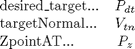
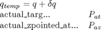
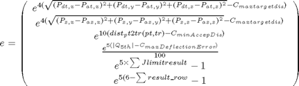

streamOnto_mine_manystarts
Description: based on streamOnto - given a start q it will try and get to the given point, it may use various start positions
[qt,solutionvalid,used_sol,targetdist,dist_val] = streamOnto_mine_manystarts(ROBOT, pt) [qt,solutionvalid,used_sol,targetdist,dist_val] = streamOnto_mine_manystarts(ROBOT, pt, q) [qt,solutionvalid,used_sol,targetdist,dist_val] = streamOnto_mine_manystarts(ROBOT, pt, q, targetNormal, q, quickver, ZpointAT)
Returns the joint coordinates corresponding to the end-effector at pt Note that the inverse kinematic solution is generally not unique, and depends on the initial guess Q (which defaults to 0). Also returns whether solution is valis and which method used and the dist_val to the required tr
Contents
- Function Call
- Variables
- Do the least squared optimisation function using q passed in
- Check the optimisation results, change start to all Zeros if necessary
- If quickver we are only doing the quick version
- Extended find (2 extra starting qs)
- EMBEDDED FUNCTION: Run iteratively changing delta q (dq)
- Error Vector (being minimised) in embedded cost calc function
- FUNCTION: checks pose validity, if valid but dist>min, return distance
- FUNCTION: Check dist:desiredTarget/ztopointAt->actualTarget/actualZ2pnt@
Function Call
Inputs: robot (structure) This holds the robot object pt (1*3 double) cartitian point where we want end effector targetNormal (1*3 double) the desired target normal at the point q (1*6 double) radians - The joint config starting guess quickver (binary) Whether to try more than q and all 0 for start joint configs. Possibly Less acurate but quicker ZpointAT (1*3 double) where the Z axis same as blast stream Returns: qt (1*6 double) radians - The recommended joint config solutionvalid (binary) whether the returned qt gives a valid solution within optimisation parameters used_sol (1->4 int) which solution for starting q was used targetdist (structure) Distance between desired & actual target dist_val (double) Distance between desired & actual pt in space
function [qt,solutionvalid,used_sol,targetdist,dist_val] = streamOnto_mine_manystarts(robot, pt, targetNormal, q, quickver, ZpointAT)
Variables

global optimise densoobj workspace; %default is true, unless proven otherwise solutionvalid=true; if size(pt, 1) == 1 pt = pt(:); % make sure pt is a column vector end % make sure targetNormal is a column vector (unit) targetNormal = targetNormal(:)/ norm(targetNormal); %used in the cost weight many times, this is so it dosen't have to be recalculated desired_targ=pt+targetNormal; numlinks = robot.n; Links = robot.link; t = robot.base; qlimits=robot.qlim; %if we don't specifiy where to point with z axis then use the 3rd targetnormal if nargin < 6 %add on the Z target if targetNormal(3)>0; ZpointAT=[pt(1:2);pt(3)+1]; elseif targetNormal(3)<0; ZpointAT=[pt(1:2);pt(3)-1]; end if nargin<5; quickver=false; end else ZpointAT=pt+ZpointAT(:)/norm(ZpointAT); end %make sure the q is correct if nargin < 3 q = zeros(numlinks, 1); else q = q(:); end q_input=q; %save the input q (or made up q) for later options = optimset('Display', 'off', 'Largescale', 'off', 'TolFun', optimise.stol,'MaxFunEvals', optimise.iLimit); xGuess = zeros(size(q));lb = []; ub = [];
Do the least squared optimisation function using q passed in
[dq] = lsqnonlin(@costComponents, xGuess, lb, ub, options);
% Update the configuration
qt = q + dq; all_qts(1).val=qt;
%if there is a collision or out of joint limit then no distance is returned
dist=[inf,inf,inf,inf];
Check the optimisation results, change start to all Zeros if necessary
[valid,dist(1),targetdist(1).val]=check_newQ(qt,qlimits,pt,t,Links,numlinks,desired_targ,ZpointAT);
if valid; used_sol=1; dist_val= dist(1); qt=qt'; return;
else
%check if current q =0, otherwise try getting a solution with q=0
if ~isempty(find(q(1:3)~=0, 1))
q = zeros(numlinks, 1);
[dq] = lsqnonlin(@costComponents, xGuess, lb, ub, options);
qt = q + dq; all_qts(2).val=qt;
[valid,dist(2),targetdist(2).val]=check_newQ(qt,qlimits,pt,t,Links,numlinks,desired_targ,ZpointAT);
if valid; used_sol=2; dist_val= dist(2); qt=qt'; return; end
end
If quickver we are only doing the quick version
%only using 1/2 num of starts so quit here even if no result found if quickver [dist_val,used_sol]=min(dist); if dist_val==inf; solutionvalid=false; used_sol=0; qt=qt';return; else qt=all_qts(used_sol).val; solutionvalid=-1; qt=qt';return; end; end
Extended find (2 extra starting qs)
%Try a guess which starts at 90' off the current Q, this might find a solution q=q_input+((sqrt(q_input.^2)~=q_input)*2-1)*pi; [dq] = lsqnonlin(@costComponents, xGuess, lb, ub, options); qt = q + dq; all_qts(3).val=qt; [valid,dist(3),targetdist(3).val]=check_newQ(qt,qlimits,pt,t,Links,numlinks,desired_targ,ZpointAT); if valid; used_sol=3; dist_val= dist(3); qt=qt'; return; end %Try randomly guessing a starting point q=[0;0;0;0;0;0]; for i=1:size(qlimits,1); q(i)=rand()*(-qlimits(i,1)+qlimits(i,2))+qlimits(i,1); end [dq] = lsqnonlin(@costComponents, xGuess, lb, ub, options); qt = q + dq; all_qts(4).val=qt; [valid,dist(4),targetdist(4).val]=check_newQ(qt,qlimits,pt,t,Links,numlinks,desired_targ,ZpointAT); if valid; used_sol=4; dist_val= dist(4); qt=qt'; return; end [dist_val,used_sol]=min(dist); if dist_val==inf %if we haven't left the function yet then the solution is not valid solutionvalid=false; used_sol=0; qt=qt';return; else qt=all_qts(used_sol).val; solutionvalid=-1; qt=qt';return; end end
EMBEDDED FUNCTION: Run iteratively changing delta q (dq)

% \end{arrary}$$ function [e]=costComponents(dq) tr=t; q_temp=q+dq; Jlimitresult=[0,0,0,0,0,0]; result_row=[1,1,1,1,1,1]; for i=1:numlinks; tr = tr * Links{i}(q_temp(i)); if q_temp(i)<qlimits(i,1); Jlimitresult(i)=qlimits(i,1)-q_temp(i); elseif q_temp(i)>qlimits(i,2); Jlimitresult(i)=q_temp(i)-qlimits(i,2); end tempresult=check_FF(tr,densoobj(i+1).ellipse,workspace.indexedobsticles); result_row(i)=tempresult; end %this normalises the vectors so their total length is 1 then adds it to actual pos actual_targ=sum(unit(tr(1:3,1:3)),2)+tr(1:3,4);
Error Vector (being minimised) in embedded cost calc function

e = [exp(4*(sqrt((desired_targ(1)-actual_targ(1))^2+... (desired_targ(2)-actual_targ(2))^2+... (desired_targ(3)-actual_targ(3))^2) - optimise.maxtargetdis)); exp(4*(sqrt((ZpointAT(1)-(tr(1,3)+tr(1,4)))^2+... (ZpointAT(2)-(tr(2,3)+tr(2,4)))^2+... (ZpointAT(3)-(tr(3,3)+tr(3,4)))^2) - optimise.maxtargetdis)); exp(10*(dist_pt2tr(pt,tr) - optimise.minAccepDis)); exp(5*(abs(q_temp(5)) - optimise.maxDeflectionError))/100; exp(5*sum(Jlimitresult))-1; exp(5*(6-sum(result_row)))-1]; end end
FUNCTION: checks pose validity, if valid but dist>min, return distance
function [valid,dist,targetdist]=check_newQ(qt,qlimits,pt,t,Links,numlinks,desired_targ,ZpointAT) global optimise densoobj workspace; %returns infinite distance by default dist=inf; %returns infite target distances by default targetdist=[inf,inf]; %it is not valid byb default so we can return at anytime and return invalid valid=false; %this is the base transform of robot tr=t; for i=1:numlinks; tr = tr * Links{i}(qt(i)); if qt(i)<qlimits(i,1) || qt(i)>qlimits(i,2); return; end; if ~check_FF(tr,densoobj(i+1).ellipse,workspace.indexedobsticles); return; end; end % Check distance dist=dist_pt2tr(pt,tr); %check distance to the target points targetdist=dist2targetpoint(tr,desired_targ,ZpointAT); %if it is allowable then it is valid and change this to return if (dist>optimise.minAccepDis) || (~isempty(find(targetdist>optimise.maxtargetdis, 1))) return; else %if we get to here it is valid valid=true; end; end
FUNCTION: Check dist:desiredTarget/ztopointAt->actualTarget/actualZ2pnt@
function [targetdist]=dist2targetpoint(tr,desired_targ,ZpointAT) actual_targ=sum(unit(tr(1:3,1:3)),2)+tr(1:3,4); targetdist(1)=sqrt((desired_targ(1)-actual_targ(1))^2+(desired_targ(2)-actual_targ(2))^2+(desired_targ(3)-actual_targ(3))^2); targetdist(2)=dist_pt2tr(ZpointAT,tr); end